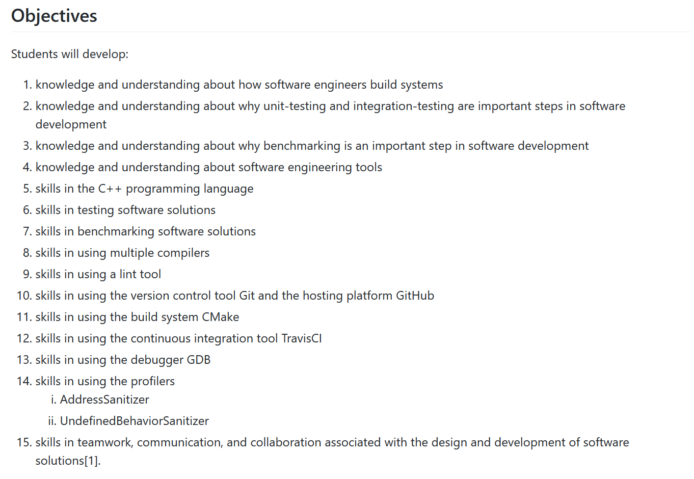
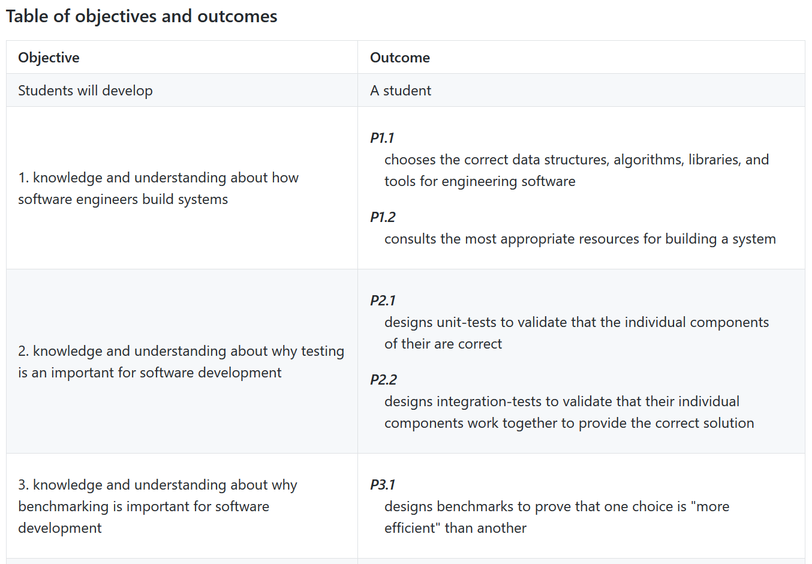
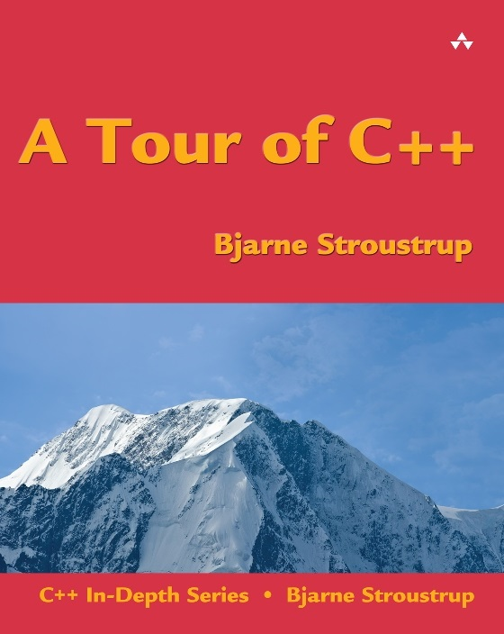
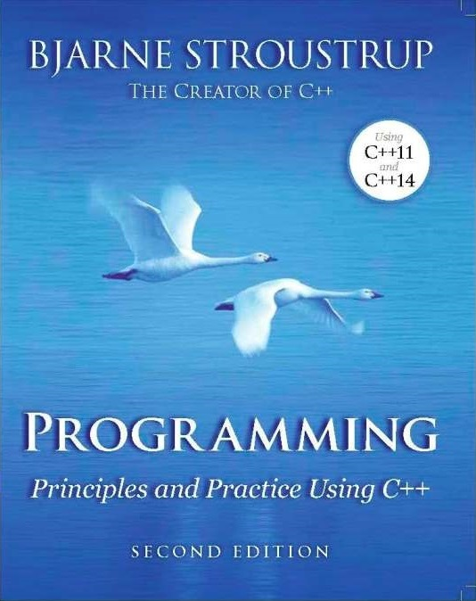
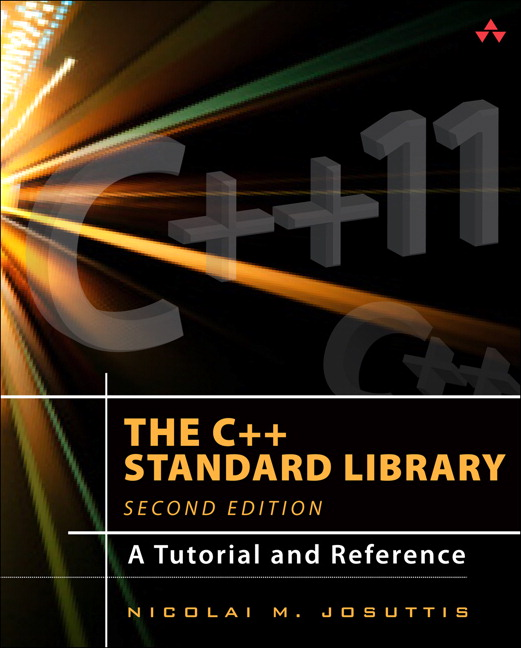
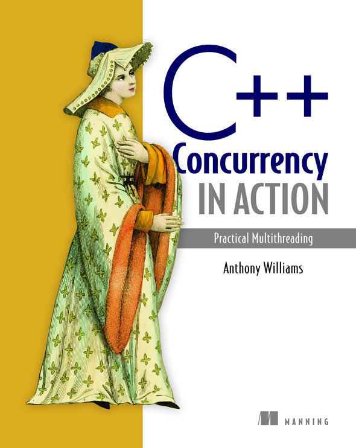
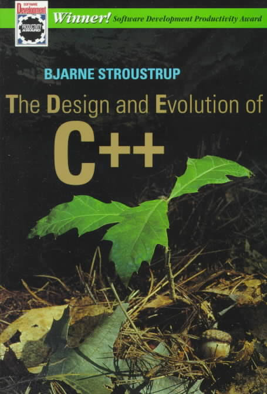
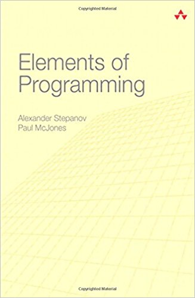
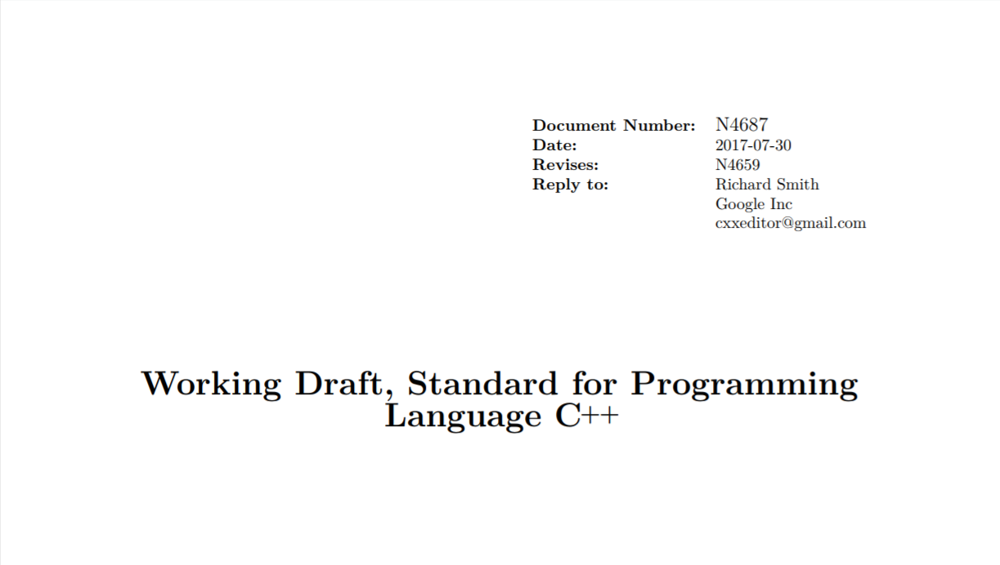

Learning C++ isn't Difficult
Teaching is the Trick
Christopher Di Bella


Agenda
- Why do we teach?
- What are we teaching?
- Learning and Teaching Resources
- Tooling
- Content to address
- Content to avoid
Agenda
- Why do we teach?
- What are we teaching?
- Learning and Teaching Resources
- Tooling
- Content to address
- Content to avoid
Agenda
- Why do we teach?
- What are we teaching?
- Learning and Teaching Resources
- Tooling
- Content to address
- Content to avoid
Why do we teach?
We teach to learn
Class reviews
Why do we teach?
- We teach to learn
- We all make mistakes
- Class reviews
Why do we teach?
- We teach to learn
- We all make mistakes
- Class reviews
Why do we teach?
- We teach to learn
- We all make mistakes
- Class reviews
What are we teaching?
Learning objectives
"Students will develop..."

Learning outcomes
"Students learn to..."

What is C++?
C++ is C with Classes
C++ is low-level Java
C++ is a low-level programming language
C++ is a high-level general-purpose multi-paradigm programming language
C++ is a programming language
that offers the right abstractions at the right time
What are we teaching?
- Learning objectives
- Learning outcomes
- Provide a correct definition for C++
What are we teaching?
- Learning objectives
- Learning outcomes
- Provide a correct definition for C++
What are we teaching?
- Learning objectives
- Learning outcomes
- Provide a correct definition for C++
Learning and teaching resources
Books
There are very many very bad C++ books out there. And we are not talking about bad
style, but things like sporting
glaringly obvious factual errors and
promoting abysmally bad programming styles.
Resources for C++ novices
|  |  |
Advanced resources 1
 |
 |
Advanced resources 2
 |
 |
Teacher-essential resources
|  |  |
Teacher-only resource
Style Guides

Online resources
Learning and teaching resources
- Resources for C++ novices
- Resources for advanced classes
- Resources for teachers
- C++ Standard for fact-checking
- C++ Core Guidelines as a style guide
- Online resources
Learning and teaching resources
- Resources for C++ novices
- Resources for advanced classes
- Resources for teachers
- C++ Standard for fact-checking
- C++ Core Guidelines as a style guide
- Online resources
Learning and teaching resources
- Resources for C++ novices
- Resources for advanced classes
- Resources for teachers
- C++ Standard for fact-checking
- C++ Core Guidelines as a style guide
- Online resources
Tooling
Turbo C++
Any course that uses Turbo C++ does a great job not teaching C++Compilers
Pick at least one of- GCC 7+
- Clang 5+
C++ International Standard
- C++98 and C++03
- C++11
- C++14
- C++17
- C++next
Technical Specifications
- A beta branch for a C++ feature
- 10 published (or pending official publication) so far
- Concepts TS + Ranges TS (novice-friendly)
- Coroutines TS + range-v3 (call for research)
Tools
- Debuggers
- Profilers
- Linters (clang-tidy)
- Version control (Git + GitHub)
- Build systems (CMake)
- Continuous Integration (TravisCI on GitHub)
Tooling
- Compilers (hint: not Turbo C++)
- C++ International Standard
- Technical Specifications
- Tools
Tooling
- Compilers (hint: not Turbo C++)
- C++ International Standard
- Technical Specifications
- Tools
Tooling
- Compilers (hint: not Turbo C++)
- C++ International Standard
- Technical Specifications
- Tools
Content to address
auto
- Code against interfaces
- Don't code against implementations
#include <iostream>
#include <string_view>
int main()
{
constexpr auto i = 0; // yes, auto, not int
using namespace std::string_view_literals;
const auto hello = "Hello, world!\n"sv;
std::cout << i << '\n' << hello;
}
Technical terms
- Objects
- Base class and derived class
- Member function and function
- Implementation-defined behavior
- Unspecified behavior
- Undefined behavior
The Standard (continuous) Library
|
|
|
|
Parallel Programming
Graphics
Generic programming
Content to avoid
C/C++
Spot the problem 1
int main()
{
auto i = 0;
auto j = ++i + i++;
return j++ + ++j;
}
Spot the problem 2
|
|
Spot the problem 3
|
|
Spot the problem 4
#include <limits>
int main()
{
auto i = std::numeric_limits<int>::max();
return --i;
}
Spot the problem 5
|
|
Template code bloat
Choose the correct container for C
template <template <typename...> typename C, InputIterator I, Sentinel<I> S>
auto insertion_sort(I first, S last)
{
auto c = C<value_type_t<I>>{};
for (; first != last; ++first)
c.emplace(ranges::find_if(c, [&first](const auto& x) { return x < *first; }, *first);
return c;
}
std::forward_list(singly linked-list)std::list(doubly-linked list)std::dequestd::multisetstd::vector
Content to address and content to avoid
- Type deduction
- Terminology
- The Standard Library
- Parallel programming
- Graphics
- Generic programming
- Don't refer to either C or C++ as "C/C++"
- Don't teach popular myths